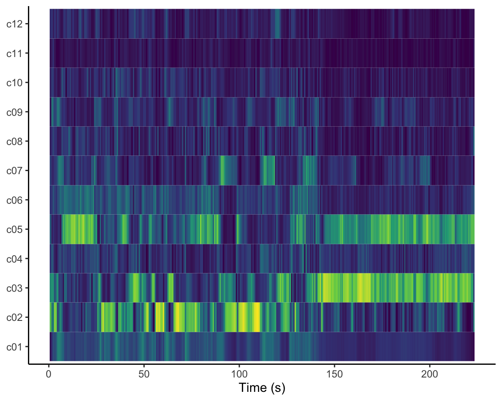

Welcome to my Portfolio for Computational Musicology 2023
Introduction: In my corpus I will be comparing two playlists that are both centered around the same specific song; Station Atlantis. A promotional tool that is often used by artists who are about to release a new song is to curate a playlist that makes a good bedding for the song and then add their song to the playlist on the day of its release. I tried this strategy myself in the process of releasing Station Atlantis last year, and made the playlist Caf Atlantis. Spotify can also provide playlists, so called song Radios, that are catered to a specific song. You can request such a playlist by clicking on the three dots at the outer right of a song, and select Go to song radio. Ive decided to take Caf Atlantis and Radio Atlantis and compare the two. Ultimately, we are then comparing the results of a human versus an A.I. strategy (although the A.I. strategy comes from humans too, of course), competing on the same type of task. Is it then the A.I. playlist that ultimately creates the most suited playlist, as it draws from a knowledge of playlist building that is as wide as the Spotify universe, or does the artist, who knows all of the other musical influences that created his or her own musical style, still know his/her own music better than any algorhithm ever will? What would be more effective, and omnipotent knowledge of humanities playlist tendencies or a deep intrinsic knowledge of the song?
Of course these questions are not easily answered, and will probably only multiply like a dragon growing new heads each time one of its question-mark bent necks has been chopped, however, lets take courage from the fact that the amount of data that ultimately can be used in investigations like these is very large, as most artists today use the promotional tool of playlist making.
One problem with my choice of corpus is that the Spotify song radios are customized to the personal taste of the Spotify user. My solution to this for the corpus is to load a playlist from a new Spotify account (without a listening history). However, I would like to find a better solution to this eventually, or slightly alter the setup of my analysis. This also exposes the real difference conceptually between the two playlists; while I previously stated that both playlists strive towards a similar goal, in reality, this is not entirely the case. In real life usage (which is different from how I use the radio in my corpus) the song radios are always personalised for the user, which makes them more of a private experience and a reflection of themselves, since this playlist isnt shown to anyone else, whereas the Caf Atlantis probably will feel like more of an engagement with the artist, in the public sphere, since anyone can visit this playlist without it being changed or responding in any way to the user.
ONE NOTE: Unfortunately, the playlist song radio was altered everytime i loaded it, and therefore some of the examples of the playlist I used are not compatible with the information in the graph. This is very unfortunate and Im sorry, but I found out too late to still change it.
Who knows the song best; the artist or the A.I.? Lets plot.
The violin plots on the left show Caf Atlantis and Radio Atlantis compared on the parameters of valence ( the positiveness conveyed by the track, 1.00 being the positive and 0.00 the negative extreme end of the spectrum), and track popularity (how popular the individual tracks in the playlist are in general. This doesnt mean how often they are played in this particular playlist, but in total everywhere). Colour is mapped onto energy, meaning that very high energy songs are yellow, and very low energy songs are dark green (as shown in the legend). The red arrow points to the song Station Atlantis, the song that was the guideline for both playlists:
Looking at these plots we can spot a few things; when it comes to valence it seems that both playlists seem to have got it right; most songs are somewhere in the lower quarter of the range. However, both playlists have an outlier in the top end. Upon listening, I do find that these song do have positive vibes, however as they are acoustic guitar songs with sensitive vocals, they are still a good match in the playlists, in my opinion. You can see for yourself:
You can see that most songs are somewhere in the middle of the energy range, and there are more extremes on the low end than on the high end of this spectrum. This is well-matched to Station Atlantis which is somewhere in the low-middle range of this spectrum. The most prominent outlier on this parameter would be Blue Water:
The first half of this song is very calm, and I chose to add it to the playlist based on that first half, while the second half is much more energetic and indeed doesnt match the playlist very well. However, it is still a quite mellow song, so we should keep in mind that it probably is the outer extreme of this particular range, since I would think there are definetely more energetic songs out there.
I found it interesting to see that although the valence in both playlists is quite similar, the range of the track popularity is much wider in Caf Atlantis that it is in Radio Atlantis. Perhaps the algorhithm included the demographic that Station Atlantis came from an unknown artist starting out, and therefore included other such artists (perhaps also from the Netherlands) in the song radio, whereas I myself included both my heroes (often very famous artists) and my friends (not very famous) in the playlist, causing a much wider range.
I Will; a version analysis
Since I wasnt very satisfied with my previous chromagrams, Ive chosen to also compare two versions of the song I Will by Radiohead. One version of I Will, the one on the left, is in the Caf Atlantis playlist, and I had the other version called LA version in there as well, but removed it because I found it didnt transition well with the other songs when the playlist was on shuffle.
Since both versions are in the same key, I was curious to see how similar the chromagrams would be and it turns out that they are very similar indeed (see the next tab as well). I think the clarity of these chromagrams might be due to the bass, that is playing the bassnotes steadily throughout the song and is very similar in both versions, as it is the bassnotes that I see represented clearly in both chromagrams. In the non-LA version there are a lot of harmonies with extra vocal lines, but I dont see them clearly coming back in the chromagram. If you follow the yellow parts of the chromagrams you can see the bass as it goes from the fifth (Ab) to the tonic (Db) to the flat sixth/ sharp fifth(A) and around the same notes again. The only counter-intuitive thing is that in the chromagram, the notes go up to the flat six and fifth whereas in the recording the bass goes down. This is because in a chromagram the energy accross all pitches in a song is channeled per pitch class, which makes the chromagram a reflection of pitch class irrelevant of pitch octave. If you move further into the song, you can see how the chromagram also shows that the harmonies start alternating twice as fast and the bassline changes at around three quarters of the song until the end of the song. This is a new part of the song, a sort of coda. Then the song ends on the tonic, also very clearly visible in the chromagram.
I Will; a version analysis part II
On th left you can see the non-LA version. I chose to show this version second because it is a little bit more blurred than the LA version. I think this is because harmonically there is more going on, such as extra vocals, which might cause more noise.
I was amazed to see how similar both chromagrams are, although in hindsight it might not be that surprising. Both versions follow exactly the same structure, only in the non-LA version it is stretched out of a bit more time. I thought this was interesting, since I personally do experience these versions to be very different and found only one well suited for the Caf Atlantis playlist. This goes to say that there is much more to a song than its harmonic and melodic properties. See for yourself if you agree:
Station Atlantis: uncovering structure
On the left you can see a chroma based self similarity matrix of the song Station Atlantis. In a self similarity matrix certain properties of a song are compared against themselves over time. In this graph, the chroma features, which means everything related to pitch class (the notes irrelevant of the octaves they are played in), of Station Atlantis are shown for each point of time in comparison with any other point in time in the song, as both the x and the y axis have time in seconds mapped onto them. Note that yellow stands for high contrast, and dark blue stands for high similarity. To practice, lets look at 50 seconds on the x axis at the intersection with the y axis; here the graph is bright yellow. This means that Station Atlantis chroma features at 50 seconds into the song, is completely unlike Station Atlantis at zero seconds into the song, or, the verse (which is happening at 50 seconds) is harmonically/melodically unlike the intro.
I found it interesting to see that analysing chroma features in this type of matrix really resulted in a graph that reveals the structure of the song. Tracing along the x axis, you can see the intro of the song in dark blue on the outer left. The guitar part that is the intro, is repeated at the end of the song, which you can see in the far right bottom corner (or the top right/left corner). The rest of the song consists of a short theme on guitar (that is also played at the end of the intro, and (a variation of it) before the outro), alternated by harmonically identical verses. The guitar part is visible as mid blue small rectangles along the axes, and the verses are in bright yellow. The conclusion to be drawn from this is that Station Atlantis is a song with clearly harmonically demarcated parts that make up a song structure.
Station Atlantis; uncovering structure II

Compared to the chroma-based self similarity matrix, a self similarity matrix based on analysis of timbre, does show a similar structure, but hardly visible because the matrix shows very little contrast. Only if you look at the left lower and right upper corner can you really see the intro, and the repeating guitar part in between the verses can be detected as creating a checker pattern across the matrix. The timbre seems to be somewhat the same throughout the entire song, according to the graph. This is mostly true, as voice and guitar are the only instruments used in the recording. However I did expect the verses to somehow pop out in the matrix, as they did in the harmonic analysis, since those are the only parts of the song that have vocals on them.
Beneath the Neural Waves; chroma chaos?
A self-proclaimed outlier in the playlist Caf Atlantis that I found made an interesting case study is the song Beneath the Neural Waves (BTNW) by Papi Thereso. Papi Thereso makes synthesizer based soundscapes, and this forms a contrast with many of the other songs that are more oriented around lyrics and a kind of singer-songwriter way of storytelling and harmonic structure. The chroma based self similarity matrix on the left shows that there seems to be no harmonic structure in the piece, which makes sense since the piece evolves mainly around sound and ambience and pitches alternate all around the pitch spectrum. Of course, some structure can be detected; it seems as if there might be many sections of roughly the same length and some of them are dark blue, indicating a sort of repetition. Based on my listening experience with the piece though, I think the dark blue spots mainly indicate similarity, and not necessarily repetition with a compositional intent to tell a story.
Beneath the Neural Waves II; sonic structure
On the left is a self similarity matrix based on timbre features. It can be seen that the sound changes at around two thirds into the song, into a kind of sound coda. (Note that it is possible to see this structure in the chroma based self similarity matrix as well, but it is much harder to see.) We could then say that BTNW has a compositional structure when it comes to sound design, but not when it comes to harmony, which mirrors my analysis of Station Atlantis, where the matrices revealed a harmonic compositional structure but not a sonic one. Analysis of more pieces in the playlist would be needed, but this seems to confirm that BTNW is indeed an outlier in at least this regard.
Beneath the Neural Waves III; a deeper dive

Now, lets take a look at the cepstrogram of Beneath the Neural Waves, since this song has an interesting sonic development. A cepstrogram allows for the analysis of timbre features, and c01, c02, c03, etc. all represent certain aspects of timbre, although it is for the most part unclear which parts exactly and how they are processed. Just keep in mind that yellow stands for contrast and dark blue stands for similarity, and that we are talking about timbre features. Thinking back to the self similarity matrix on the previous tab, we can see in this cepstrogram that indeed, most of the core timbre features (c01, c02, c03, c05 and a few others higher up) change significantly around two thirds of the song. This shows again the sonic contrast between the first 140 seconds of the song and the rest after it. If you want, you can even go through the whole song and see how it aligns with the self similarity matrix.
Blue (and yellow) Water
On the left you see a chordogram of the song Blue Water that is in the playlist Caf Atlantis. I chose this song for analysis because it has two repetitive harmonic sequences, one for the first half of the song, and then the another until the end, and I was wondering if this would show up in the chordogram and in what way. A chordogram is a measure that computes in what chord the most energy lies at each moment in the song. The dark blue lines can be read as the chord that is being played at that moment in time, on the x axis you can see how many seconds into the song you are.
As you can see when you take a general glance at the gram, there is indeed a change at around the middle of the song. When we take a closer look, we can see that the beginning of the song seems to be in G, and alternating to C, as the parts for G7, G major and Gminor are the darkest blue in this part, but switch for parts where Cmin, Cmaj and C7 are darkest. By ear, I would say this part is in the tonality of Gminor, alternating to Cmin. There is a lot going on in the song, there are bells in the high register, synths, and several (sometimes off key) vocals, and most of it is organic, by which I mean the instruments used are not computers and are mostly analogue. This probably explains for the fact that the it is harder to compute whether the chords are in major/minor/dominant. A sometimes off key, or differently intonated on different instruments third or seventh then accounts for the fact that a major, a minor, as well as a dominant chord is detected.
I found it cool to see that the part of the song where a kind of transition happens between the first harmonic structure and the second is kind of blurry in the graph and there seems to be a kind of diagonally upward movement. What I can connect from the recording and the visual is that in the beginning the tonality of Gmin still lingers, and it slowly dissolves into higher pitched sounds.
In the second part of the song, the tonality stays the same as in the first part, but now the chords (by ear) go between Gmin, E flat major, C min and Bmajor. I do see these chords in the chordogram, mainly in the sense that the chords are correct as far as the basenote goes. I also see other chords show up that Im not hearing, and I attribute this to the fact that certain chords have very many notes in common, for example Eb major and Gmin, causing these closely related chords to pop up alongside the chords that are actually being played.
Deep Within; going inward slows you down

On the left you can see a tempogram of the song Deep Within by the vocal group Greener Grass, that is in the playlist Caf Atlantis. A tempogram shows the tempo in BPM of a song on the y axis and its time in seconds on the axis. Following the yellow line, you can see that there is a consistent tempo throughout the song, which is rhythmically entirely repetitive, that slightly slows down throughout the song and slows down at the end. I chose to use a tempo octave restriction, since in the unrestricted tempogram the strongest yellow line happened at around 200 BPM, which is much too fast for this song. Personally I didnt perceive the gradual slowing down of the song by ear, but the tempo drop at the end of the song is clearly perceptible. This is quite a beautiful way to make the lyrics Deep within yourself, that repeats throughout the entire song, tangible, as if the meditative action of going with in yourself slows you down.
A bigger picture; tempi compared
On the left is a histogram that shows how the tempi are distributed for each playlist. As you can see, most tempi are distributed among 80 until 140 BPM. The tempo of Station Atlantis is around 100 BPM, so it is interesting that the song radio has only three songs in that are around that temp, and has more songs in lower as well as higher tempos. Caf Atlantis does however have seven songs at around 100 BPM. From this perspective I would say, Caf Atlantis has matched the song better than song radio Station Atlantis, especially when taking into account that Caf Atlantis has about 20 songs less in total than the song radio.
Clustering sounds
Here you can all of the songs on the song radio clustered on timbre features. I used complete clustering and am very happy with the results. I find it really cool to see that my entire EP (except for Station Atlantis) is grouped togeteher on the far left (The first fire song names on the y-axis). Station Atlantis is most closely paired with Archipelago II, so lets check out this song and see what we think:
and to compare:
Coda
Thank you for checking out my corpus! I hope you enjoyed it, I definitely did. Byee :)